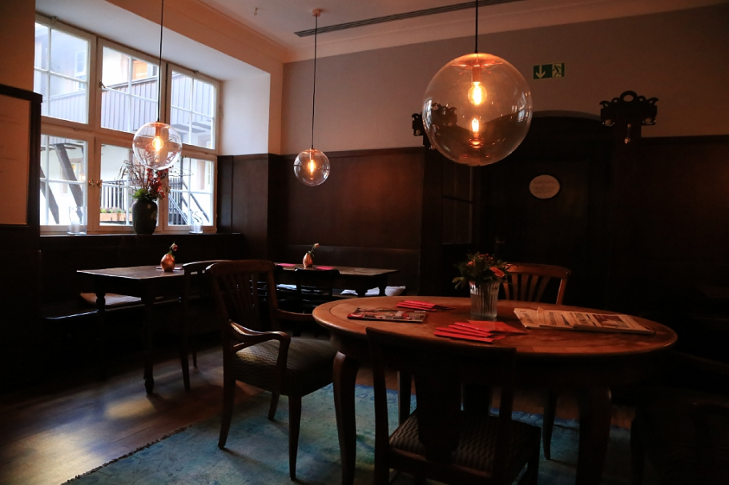

Downtown Thrift & Coffee

Sometimes you just need a break from studying, but you don't want to spend your entire weekly allowance on a single latte. We spent Saturday exploring the city center to find the best spots that actually offer student discounts.
The Vintage Cafe Find
Tucked away just two streets behind the main shopping district, we stumbled upon a fantastic little cafe. If you show your student ID at the register, you get 15% off all hot drinks! The Wi-Fi is fast, and the vintage armchairs make it the perfect spot to read a book or catch up on assignments.
Our Budget Breakdown
Here is exactly what we spent for an afternoon in the city:
- Transport: €0.00 (We used our semester transit passes)
- Large Cappuccino: €3.40 (With the student discount applied!)
- Thrift Store Find: €6.00 (Found an amazing vintage denim jacket at the second-hand shop next door)
Pro Travel Tip:
Always carry your physical student ID card! Many of these smaller local cafes don't advertise their discounts on the menu, so you always have to ask politely at the counter.